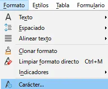
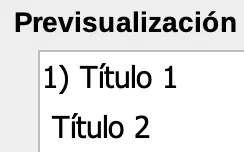
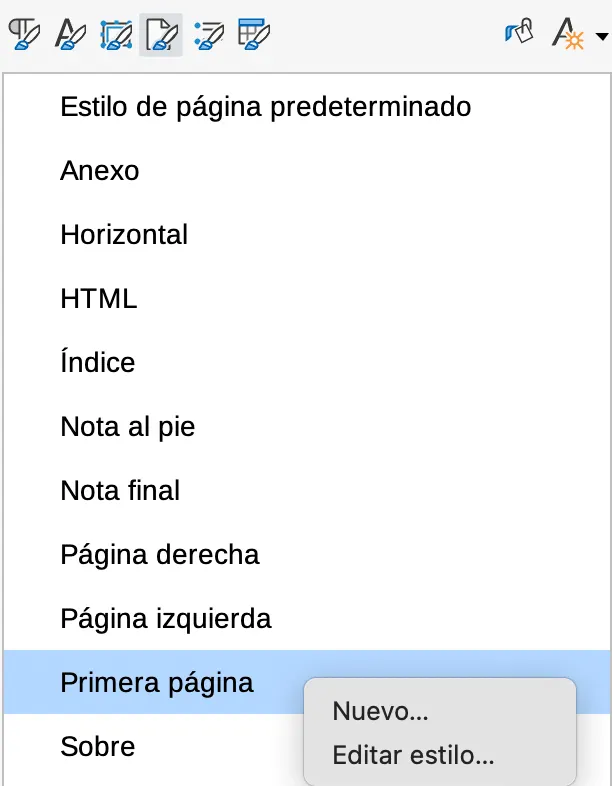

A10: Tabla de Contenido¶
En esta actividad, se aprende a insertar y modificar tablas de contenido. Así mismo también se aprende a usar la herramienta numeración de títulos.
Desarrolle las siguientes tareas:
TAREA 01: Tabla de contenido 1.0 1¶
En esta tarea, aprenderá a insertar y modificar una tabla de contenido. Al final de la actividad tendrá una tabla de contenido como la siguiente:

DESCARGUE los siguientes archivos y guárdelos en la carpeta de evidencias:
ABRA el archivo: A10T01-mitos.odt y AGREGUE un encabezado de página con el siguiente contenido:
Tabla de contenido 1.0 - Nombre Apellido - Curso - Jornada - Fecha - Hora
Debería quedar así:
SELECCIONE todos nombres: Adonis, Afrodita y Agón y en la barra de herramientas lateral, en el menú de estilos de párrafo, APLIQUE el estilo: Título 1
UBIQUE el cursor al principio de la página.
En la barra de herramientas estándar, PULSE el ícono: Insertar salto de página.

UBIQUE nuevamente el cursor al principio de la página.
En el menú superior, PULSE el botón Insertar > sumario e índice > Sumario, índice o bibliografía
En la ventana con el título: Sumario, índice o bibliografía, configurar lo siguiente:
En la pestaña Tipo configurar:
En la sección de Tipo y título:
Título: Índice de fichas mitológicas
PULSAR Aceptar.
Se crea inicialmente una tabla de contenido básica. En su cuaderno responda:
¿Por qué es útil una tabla de contenido en un documento?
En la barra de herramientas lateral, en el menú de estilos, EDITE el estilo Título de sumario así:

En la pestaña Alineación configurar:
En la sección de Opciones: Centro
PULSE el botón Aceptar.
La tabla de contenido debería tener la siguiente apariencia:

¿Qué significa el fondo gris de la tabla de contenido?
El fondo gris de la tabla de contenido significa que es una sección especial del documento. En realidad no hay ningún color en el fondo. Esto se puede demostrar PULSANDO el botón de la previsualización del documento ubicado en la barra de herramientas estándar.

En la barra de herramientas lateral, en el menú de estilos de párrafo, EDITE el estilo Sumario 1 así:
En la pestaña Sangrías y espaciado configurar:
En la sección Espaciado:
Bajo el párrafo: 0.50cm
PULSAR el botón Aceptar.
UBIQUE el cursor al final del documento.
INSERTE dos párrafos vacíos PRESIONANDO la tecla ENTER dos veces.
En la barra de herramientas estándar PULSE el botón: Alternar marcas de formato para evidenciar que realmente se agregaron dos párrafos.

En el menú superior, PULSE el botón: Insertar > Texto desde archivo…
En el explorador ubique y seleccione el archivo que descargo anteriormente: A10T01-mitos.odt y luego PULSE el botón ABRIR.
Esto hace que se pegue otro párrafo al final del archivo. En este caso hablan del dios Olímpico HERMES.
SELECCIONE el nombre HERNES y APLIQUE un estilo de Título 1.
UBIQUE nuevamente la tabla de contenido y en el menú contextual de la tabla de contenido PULSAR la opción Actualizar Índice.

En su cuaderno responda la siguiente pregunta:
¿Que pasa en el documento, una vez se actualiza el índice?
En la barra de herramientas lateral, en el menú de estilos de párrafo, EDITE el estilo de Título 1 así:
En la pestaña flujo de texto configurar:
En la sección Saltos:
Marcar Insertar.
PULSE el botón Aceptar.
AÑADA un píe de página que muestre a la derecha el texto Página X de Y (siendo X el número de la página actual e Y el total de páginas del documento).
ACTUALIZAR el índice nuevamente.
En la tabla de contenido generar un menú contextual y pulsar Editar índice.
En la ventana de Edición de índice, configurar lo siguiente:
En la pestaña Fondo configurar:
En la sección color:
paleta: standard
color: Lima
En la pestaña Columnas configurar:
En la sección Configuración:
Columnas: 2
En la sección Anchura y espaciado:
DESACTIVAR: Anchura automática
Espaciado: 0.80cm
En la sección Línea de separación:
Estilo: Sólido
Anchura: 1,50 pt
Color: Rojo
En la pestaña Entradas configurar:
En la sección de Estructura y formato:
En Estructura aparecerá lo siguiente:
PULSAR la letra T.
En la opción de Carácter de relleno seleccionar: _
PULSAR la casilla en blanco que va después de la letra T y antes del carácter #.
En dicha casilla escribir: Pág.
PULSE el botón Aceptar.
En su cuaderno responda la siguiente pregunta:
¿Que diferencias observa en la tabla de contenido?
Ahora se debe configurar un esquema de numeración en los títulos de los capítulos.
¿Qué es un esquema de numeración?
Un esquema de numeración es un sistema organizado para enumerar elementos, como títulos, subtítulos, o pasos en un documento o presentación. Sirve para estructurar la información de manera clara y jerárquica, facilitando la lectura y comprensión. Generalmente, se utilizan números arábigos, romanos o letras, combinados para indicar la relación entre los diferentes niveles de importancia.
En el menú superior PULSE: Herramientas > Numeración de títulos…
En la ventana Numeración de títulos configurar:
En la pestaña Numeración configurar:
En la sección de Numeración:
Número: 1, 2, 3…
En la sección Separador:
Después: )
FIJARSE que en la sección de Previsualización este mostrando: 1) Título 1.
FIJARSE que en la sección de Nivel este seleccionado el número 1.
PULSE el botón Aceptar.
ACTUALICE la tabla de contenido.
GUARDE los cambios y cierre el software LibreOffice Writer.
{kind=link}
{kind=link}
{kind=link}
TAREA 02: Tabla de contenido 2.0 1 📷1 🔴¶
En esta tarea pone en práctica lo aprendido hasta el momento. Se usará la herramienta de numeración de títulos. También se editan los estilos de párrafo y de páginas. Por último se crea una tabla de contenido. Al final tendrá un documento como el siguiente:

DESCARGUE el siguiente archivo y guárdelo en la carpeta de evidencias:
A10T02-proyecto_escritorio_libre.odt Descargar
ABRA el archivo: A10T02-proyecto_escritorio_libre.odt y AGREGUE un encabezado de página con el siguiente contenido:
Tabla de contenido 2.0 - Nombre Apellido - Curso - Jornada - Fecha - Hora
En el menú superior PULSE Herramientas > Numeración de títulos…
En la ventana Numeración de títulos configurar:
En la pestaña Numeración configurar:
En la sección Nivel seleccionar 1.
En la sección Numeración:
Número: 1, 2, 3…
En la sección Separador:
Después: (colocar un punto seguido de un espacio)
En la sección Nivel seleccionar 2.
En la sección Numeración:
Número: a, b, c…
Mostrar sub-niveles: 2
En la sección Separador:
Después: (colocar una paréntesis seguido de un espacio)
PULSE el botón Aceptar.
En su cuaderno responda las siguientes preguntas:
Al configurar la Numeración de títulos, ¿Qué pasó con cada uno de los títulos en el documento?
¿Qué ventaja tiene la numeración de títulos por medio del uso de la herramienta: Numeración de títulos, en comparación con haber usado la herramientas Listas ordenadas?

GUARDE el documento.
Es necesario adicionar una PORTADA al documento.
¿Por qué es importante una portada en un documento?
La portada es crucial porque es la primera impresión del documento. Sirve para identificar el tema, el autor y la fecha de creación de manera clara y concisa. Además, una buena portada profesionaliza el trabajo, facilita la organización y ayuda a captar la atención del lector desde el principio.
POSICIONE el cursor al principio del documento (antes de la palabra 1. Objetivo)
En la barra de herramientas estándar, PULSE el botón Insertar salto de página.
En la barra de herramientas lateral, en el menú de estilos de página, PULSE doble click sobre el estilo Primera página para aplicar el estilo de primera página.
En la jerarquía de estilos de página (NO CONFUNDIR CON LA JERARQUÍA DE ESTILOS DE PÁRRAFO) editar el estilo Primera página con la siguiente configuración:
En la pestaña Página configurar:
En la sección Márgenes:
Izquierda, derecha, arriba, abajo: 3,00cm
En la sección Configuración de disposición:
Desmarcar la opción: El fondo cubre los márgenes.
En la pestaña Área configurar:
En la sección de Color:
Color: Amarillo
En la pestaña Bordes configurar:
En la sección Disposición de líneas:
Preconfigs: Los cuatro bordes.
En la sección Línea:
Color: Naranja
En la sección Separación:
Izquierda, derecha, arriba, abajo: 2,00cm
En la sección Estilo de sombra:
Posición: Proyectar sombra a la parte inferior derecha
PULSE el botón Aceptar.
En la página de PORTADA “con fondo amarillo” escribir el siguiente párrafo:
Proyecto de Creación de un Escritorio Libre para Clientes Corporativos.
Para el párrafo recién escrito, en la barra de herramientas lateral, en el menú de estilos de párrafo, APLICAR el estilo de nombre: Adjust
EDITAR el estilo Adjust de la siguiente manera:
En la pestaña Efectos tipográficos configurar:
En la sección Color de letra:
Color de letra: Rojo
Transparencia: 10%
En la sección Efectos:
Mayusculación: Versalitas
Marcar la opción de sombra
En la pestaña Alineación configurar:
En la sección Opciones, marcar la opción de Derecha
PULSE el botón Aceptar.
En su cuaderno describa las características de la portada recién creada.
GUARDE los cambios.
Es necesario agregar una TABLA DE CONTENIDO al documento.
¿Por qué es importante una tabla de contenido?
Una tabla de contenido es importante por las siguientes razones:
Facilita la navegación: Permite a los lectores encontrar rápidamente la información que buscan, ahorrando tiempo y esfuerzo.
Organiza la información: Muestra la estructura lógica del contenido, lo que ayuda a comprender la relación entre las diferentes secciones.
Mejora la legibilidad: Hace que el documento sea más accesible y atractivo visualmente.
Aumenta la profesionalidad: Demuestra que el autor se preocupa por la claridad y la organización
SITUE el cursor al principio del documento antes de la palabra 1. Objetivo
En el menú superior PULSE Insertar > Sumario e Indice > Sumario, índice o bibliografía…
En la ventana de Sumario, índice o bibliografía, configurar lo siguiente:
En la pestaña Tipo configurar:
En la sección Tipo y Título:
Título: CONTENIDO
En la pestaña Columnas configurar:
En la sección Configuración:
Columnas: 2
En la sección Anchura y espaciado:
Espaciado: 0,80 cm
En la sección Línea de separación:
Estilo: Sólido (línea continua)
Anchura: 1,50 pt
Color: Rojo
PULSE el botón Aceptar.
En la barra de herramientas lateral, en el menú de estilos de párrafo, identificar el estilo Estilo de párrafo predeterminado > Indice > Sumario 1 y modificar para que la letra sea negrita.
En la barra de herramientas lateral, en el menú de estilos de párrafo, identificar el estilo Sumario 2 y modificar para que la letra sea itálica.

En la barra de herramientas estándar, PULSE el botón Alternar previzualiación de impresión.
PREVISUALIZAR a dos hojas. (Realice una captura de pantalla de la interfaz y guárdela en la carpeta de evidencias con el nombre: A10T02-proyecto_escritorio_libre.png)
GUARDE los cambios.
Es necesario agregar una hoja horizontal al documento.
¿Por qué una hoja horizontal en el documento?
A veces es necesario agregar una hoja horizontal a un documento por varias razones:
Para acomodar contenido ancho: Si hay una tabla, imagen o diagrama que es demasiado ancho para caber en una página vertical, una hoja horizontal proporciona el espacio necesario.
Mejorar la legibilidad: En algunos casos, presentar información en formato horizontal puede hacer que sea más fácil de leer y comprender, especialmente para datos complejos.
Diseño y presentación: El diseño horizontal puede ser una elección estética o estratégica para destacar ciertas secciones del documento o para crear un diseño más dinámico.
Impresión: En algunos casos, la orientación horizontal puede ser necesaria para imprimir correctamente un documento, especialmente si contiene elementos que no se ajustan a la orientación vertical.
HORIZONTAL de la siguiente manera:
En la pestaña Generales configurar:
En la sección estilo:
Estilo siguiente: Seleccionar estilo de página predeterminado.
PULSE el botón Aceptar.
POSICIONE el cursor en el título: 4. Sistema Operativo
En el menú superior, PULSAR Insertar > Más saltos > Salto Manual…
En la sección Tipo configurar:
Marcar salto de página.
Estilo de página: Seleccionar Horizontal.
PULSE el botón Aceptar.
PREVISUALICE el documento a varias páginas (matriz 3x3)
GUARDE los cambios y cierre el software LibreOffice Writer.
{kind=link}
TAREA 03: EVALUACIÓN¶
Presentación de cuaderno y carpeta de evidencias
En esta tarea, el estudiante es evaluado con los temas vistos en la presente actividad.
El estudiante presenta el cuaderno con el desarrollo de todas las tareas.
El estudiante presenta su carpeta de evidencias.
El docente realiza unas preguntas para comprobar que el estudiante haya entendido los temas.